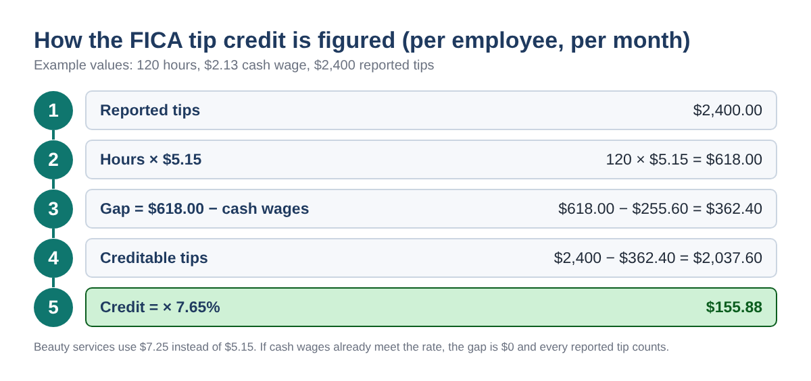
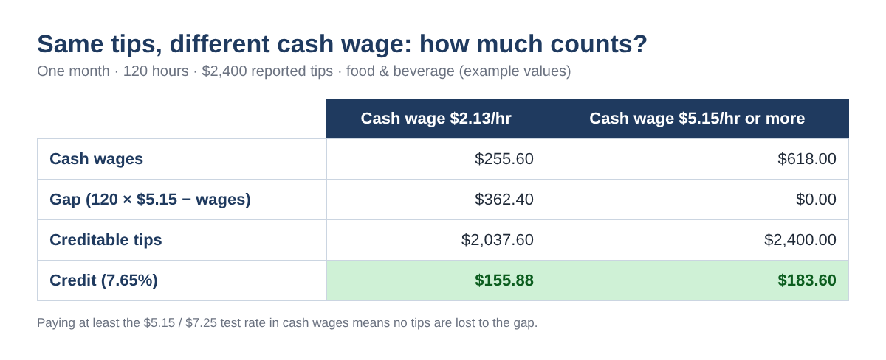
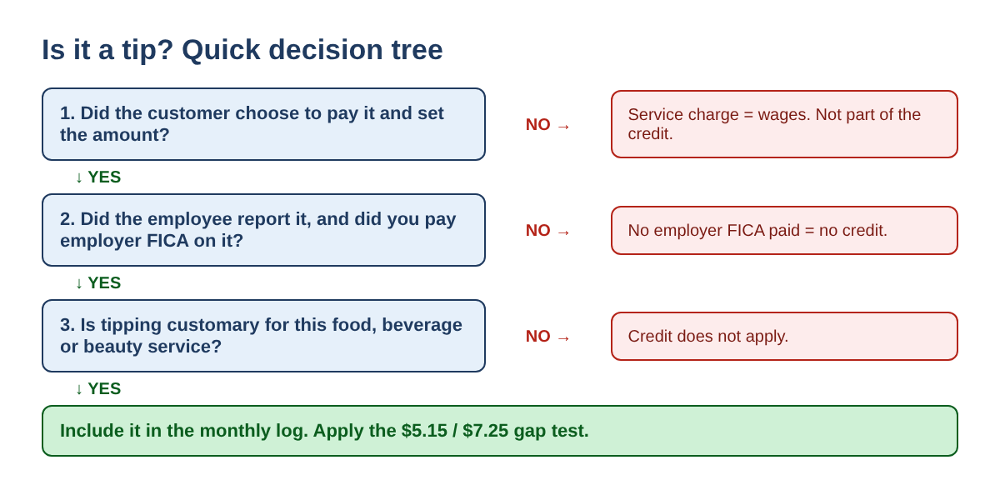
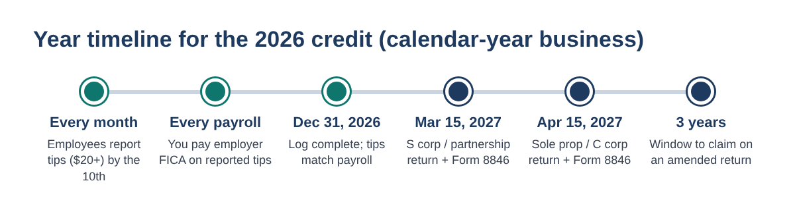

Paying FICA on Employee Tips? How to Figure the FICA Tip Credit (Form 8846) for Restaurants and Salons in 2026
↓ Get the free Excel + PDF kit for this article
If your employees earn tips, you already pay something most owners never think about: the employer share of Social Security and Medicare, 7.65%, on every dollar of tips they report to you. A busy restaurant, nail salon or hair salon can pay thousands of dollars a year this way.
The good news is that much of that money can come back as the FICA tip credit, claimed on IRS Form 8846. It used to be a restaurant-only credit. For tax years beginning after December 31, 2024, it also covers tips for barbering and hair care, nail care, esthetics, and body and spa treatments. This post walks you through the exact math, month by month, so you can estimate your own credit before year-end with nothing more than a spreadsheet.
Who can claim it
You can claim the FICA tip credit when both of these are true:
- Your employees received tips from customers for providing, delivering or serving food or beverages, or for barbering and hair care, nail care, esthetics, or body and spa treatments, and tipping is customary for that service.
- You paid or incurred the employer share of Social Security and Medicare taxes on those tips.
That second point matters. The credit is based on tax you actually paid. Tips an employee never reported, and tips received by a booth renter or a 1099 contractor, carry no employer FICA, so they earn no credit.
The rule in one sentence
For each employee and each month, the credit is 7.65% of the reported tips minus the part of those tips needed to bring the employee's cash wages up to a fixed federal rate: $5.15 an hour for food and beverage businesses (the federal minimum wage in effect on January 1, 2007, which the law freezes) and $7.25 an hour for beauty services (the current federal minimum wage).

Step-by-step: figure one employee's month
- Gather three numbers from your payroll records: hours worked in the month, cash wages paid (excluding tips), and tips the employee reported to you.
- Pick the rate: $5.15 for food and beverage, $7.25 for beauty services. Use the federal rate even if your state minimum wage is higher.
- Find the gap: hours × rate, minus cash wages. If the answer is below zero, the gap is zero.
- Creditable tips = reported tips minus the gap (but never below zero).
- Credit = creditable tips × 7.65%.
Here is a restaurant server who worked 120 hours in October at a $2.13 cash wage and reported $2,400 in tips.
| Step | Math | Result |
|---|---|---|
| Hours × $5.15 | 120 × $5.15 | $618.00 |
| Gap | $618.00 − $255.60 cash wages | $362.40 |
| Creditable tips | $2,400.00 − $362.40 | $2,037.60 |
| Credit | $2,037.60 × 7.65% | $155.88 |
Example values for illustration only.
Type it into Excel or Google Sheets
Make one row per employee per month. Put hours in B2, cash wages in C2, reported tips in D2 and the rate (5.15 or 7.25) in E2. Then type:
- F2 (gap):
=MAX(0, B2*E2 - C2) - G2 (creditable tips):
=D2 - MIN(D2, F2) - H2 (credit):
=ROUND(G2*0.0765, 2)
Copy the row down for every employee and month, then add up column H. That total is a good estimate of Form 8846 line 4. Columns D, D minus G and G match lines 1, 2 and 3.
Why the cash wage changes your credit
The gap only exists when you pay less than the test rate in cash. Many nail and hair salons pay commission or hourly wages well above $7.25, so every reported tip counts. Many restaurants use a tipped cash wage, so part of each month's tips is lost to the gap.

Here are three worked examples you can use to test your own spreadsheet:
| Employee (example) | Hours | Cash wages | Tips | Gap | Credit |
|---|---|---|---|---|---|
| Restaurant server ($5.15 test) | 120 | $255.60 | $2,400 | $362.40 | $155.88 |
| Nail tech on commission ($7.25 test) | 160 | $1,800.00 | $900 | $0 | $68.85 |
| Salon assistant ($7.25 test) | 100 | $500.00 | $700 | $225.00 | $36.34 |
Example values. Salon assistant: 100 × $7.25 = $725; $725 − $500 = $225 gap; ($700 − $225) × 7.65% = $36.34.
Tip or service charge?
The IRS says a payment is a tip only if the customer voluntarily decides to pay it and decides the amount. A mandatory service charge, such as an automatic gratuity for large parties, is not a tip. When you pass it to employees it is regular wages, so it does not belong in your tip credit math.

Edge cases worth checking
- Employees above the Social Security wage base. The 2026 wage base is $184,500 ($192,300 for 2027). Tips above it carry only the 1.45% Medicare tax, so only 1.45% counts for that part, and Form 8846 asks you to attach a separate computation.
- Tips smaller than the gap. If a host works 80 hours at $2.13 ($170.40) and reports $200 in tips, the gap is $241.60, so the whole $200 is used up and the credit for that month is $0.
- Restaurant and salon under one company. Use $5.15 for food and beverage employees and $7.25 for beauty service employees.
- Owner's own tips. A sole proprietor is not an employee of the business, so no employer FICA and no credit.
- Counter-only or takeout service. The credit needs a service where tipping is customary. If you are unsure, ask your tax preparer.
- "No tax on tips" is different. That new deduction is claimed by the worker on their own return. It does not change the employer credit.
Key dates for the 2026 credit

Employees must report cash tips of $20 or more in a month by the 10th of the following month. Form 8846 is filed with your income tax return: March 15, 2027 for calendar-year S corporations and partnerships, and April 15, 2027 for sole proprietors (Form 1040) and C corporations (Form 1120), unless you extend. You can claim the credit, or elect not to, within 3 years of the return due date, on an original or amended return.
Common mistakes
- Using the state minimum wage instead of $5.15 or $7.25.
- Figuring the gap once for the whole year instead of month by month.
- Including automatic service charges or unreported cash tips.
- Forgetting to reduce the payroll tax deduction by the credit amount (the law does not allow a double benefit).
- Leaving salon tips out because the credit "is only for restaurants". That changed for tax years beginning after 2024.
- Tips in your log not matching the tips in your payroll reports and W-2s.
FAQ
Is the credit refundable?
No. It is part of the general business credit, which reduces income tax. How much you can use in a given year depends on your whole return.
Do I need hours for salaried or commission employees?
Yes, the gap test uses hours. If their cash pay is clearly above $7.25 (or $5.15) an hour, the gap is zero and all reported tips count, but keep the hours on file.
Can I still claim it for 2025?
The IRS instructions allow you to claim the credit within 3 years from the due date of the return, including on an amended return. Ask your tax preparer whether amending makes sense for you.
Does an S corporation or partnership file Form 8846?
Yes. Partnerships and S corporations file Form 8846 and pass the credit through to owners.
Year-end checklist
- Monthly tip reports are on file for every tipped employee.
- Hours are recorded for every tipped employee.
- Service charges are run through payroll as wages, not tips.
- Each location is marked food and beverage ($5.15) or beauty service ($7.25).
- Your monthly credit sheet matches your payroll software's tip totals.
- Your tax preparer has your Form 8846 estimate before the return is filed.
Disclaimer: this post is for education only and is not tax or legal advice. Rules change; check IRS.gov/Form8846 and talk to your tax preparer before filing. Example values are for illustration only.
You can download the ready-made FICA Tip Credit Calculator 2026 for free in the Free kit download box below (Excel + PDF guide, no sign-up).
Sources
- 26 U.S.C. 45B: credit for employer Social Security taxes paid on employee cash tips
- IRS Instructions for Form 8846 (Rev. December 2026, draft)
- IRS: Tip recordkeeping and reporting
- SSA: Contribution and benefit base
- IRS Publication 509 (2027 draft), tax calendars
Free kit download
Tools to follow this article step by step. No sign-up needed.
- Excel workbook (.xlsx)FICA_Tip_Credit_Calculator_2026_EN.xlsx · 38 KB
- Step-by-step guide (PDF)FICA_Tip_Credit_Guide_2026_EN.pdf · 64 KB
Free to use for yourself and your own business; please do not resell or redistribute. General information, not tax, legal or accounting advice; check every figure against your own records.